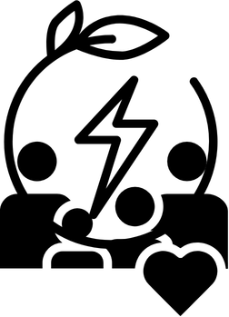
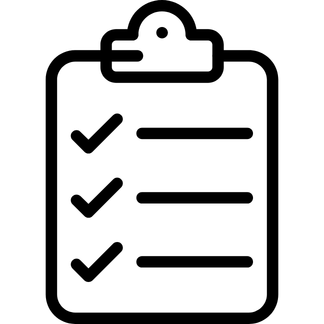

Seja bem-vindo ao
O que é?
O EcoLuz é uma plataforma criada para ajudar famílias a entenderem melhor o consumo de energia em suas casas. Por meio de um questionário simples e do cadastro das contas de luz, o sistema identifica possíveis sinais de vulnerabilidade energética e alerta quando há aumento anormal no consumo.
Com o EcoLuz, o usuário pode acompanhar seus gastos, visualizar gráficos, receber recomendações personalizadas e tomar decisões mais conscientes para economizar energia. A proposta é usar a tecnologia para promover consumo responsável, reduzir desperdícios e contribuir para uma energia mais justa e acessível.

Como funciona?
1. Preencha o perfil familiar
Informe dados simples sobre sua casa, renda, equipamentos e hábitos de consumo.
2. Cadastre suas contas de luz
Adicione o valor e o consumo mensal em Formulário para acompanhar seu histórico.
3. Receba seu diagnóstico
O sistema calcula seu nível de risco energético, exibe em Dados de Consumo e identifica possíveis problemas.
4. Acompanhe alertas e recomendações
Veja gráficos, avisos de consumo anormal e dicas para economizar energia.
